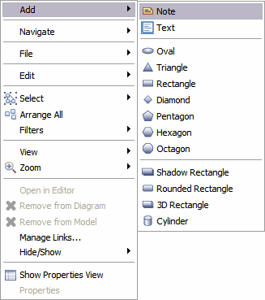

The Instance Diagram Editor toolbar allows you to quickly and easily complete many of the options available with the Context Menu including:
- Select
- Arrange All
- Filters
- Zoom
This section discusses some of the other tools available with the Instance Diagram Editor. These tools are not Tigerstripe specific. The Instance Diagram Editor is built on the Eclipse framework called the Graphical Modeling Framework (GMF). Use of this framework means that the Class Instance Diagram Editor has many additional tools available that are provided by the GMF.
The following figure, displays one the context menus provided as a part of the Instance Diagram Editor. You can access this menu by right-clicking anywhere on the Instance Diagram Editor. To be more specific, you can right-click anyplace on the diagram where there a diagram does not exist.
In the above Context Menu, there are a number of tools available.
The Instance Diagram Editor supports the following images formats: